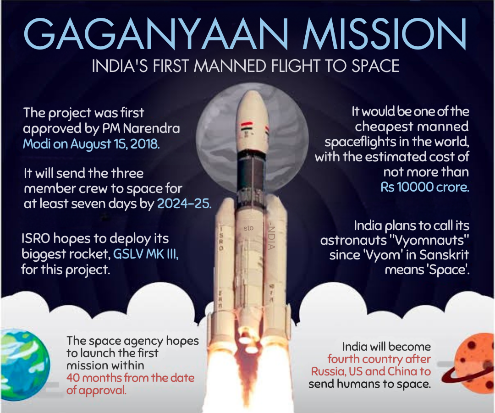

India launches Gaganyaan Mission — a giant leap for its space program
In a historic move, the Indian Space Research Organisation (ISRO) successfully launched
the Gaganyaan Mission, marking India’s first step toward sending humans into space.
The spacecraft completed all preliminary tests, and the crew module will carry astronauts
by next year. The mission strengthens India’s position as a global leader in space technology.
Local Updates
The Bengaluru Metro Phase 3 project has officially begun, extending connectivity to new
IT hubs and residential areas. Once completed, it is expected to reduce travel time across
the city by nearly 40%. Citizens have welcomed the project, citing improved daily commutes
and reduced traffic congestion.